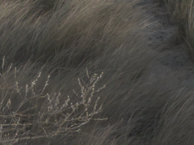
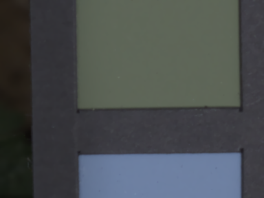

原始隐藏集 · 108 张模拟 RAW
33.48 dB
v1.1.0 的自适应决策让平均画质比它的固定物理重建高 0.28 dB。v1.0.0 在已知布局上达到 33.51 dB，运行更快。
下载逐图成绩 CSV| 方法 | PSNR dB | 低照 dB | 耗时 ms |
|---|---|---|---|
| v1.0.0 配置 | 33.51 | 30.06 | 12.15 |
| v1.1.0 自适应 | 33.48 | 30.03 | 17.74 |
| 固定物理重建 | 33.21 | 29.87 | 8.31 |
图像尺寸 96 × 96。耗时来自同一单核 CPU，每图交错测量五遍。
每个感光点只记录一次滤色测量。改变滤镜的位置和响应，重建程序面对的采样问题也随之改变。
先暂时遮住部分观测，用不同方案预测这些位置。预测误差决定采用哪种后处理，以及与固定物理重建混合多少。
5.0545.0494.536遮挡预测误差越低越好。本例选中图块去噪，真实参考图上的 PSNR 比固定 TV 低 0.16 dB。
Coding agent
给模型传感器规格和开发集评分，让它写出可执行的 isp(raw, meta)。每组最多尝试 10 个候选；选定程序后，才评测隐藏场景。
按同色像素的有效权重归一化插值，先估计绿色，再恢复红、蓝色差。
低照 · 高山湖同一张 96 × 96 开发集 RAW全开发集 SSIM 0.8253
曲线的每个点取 21 个开发场景、3 档光照的平均。第 9 轮获选，在 9 个独立隐藏场景上取得 29.58 dB。后续发布的 v1.0.0 与 v1.1.0 单独评测。
同为十次生成机会，使用开发集反馈的程序，在隐藏集上比独立采样平均高 0.35 dB。每格只有 3 次运行，95% 区间为 −0.54 到 +1.24 dB；换三个模型重复后分别是 +0.87、+0.55 和 +1.97 dB，见多模型实验。
原实验里，给反馈再加一段噪声与成像知识，低照隐藏集的平均 PSNR 提高 0.46 dB。换三个模型重复后，这一提升没有复现（−0.75、+0.12 和 −0.81 dB）。
Benchmarks
同一套程序能否处理陌生的滤色阵列？自动选择的后处理能否提高画质？四组对照，分别检查这两个问题。
| 方法 | 可处理 RAW | PSNR dB |
|---|---|---|
| v1.0.0 配置 | 864 | — |
| v1.1.0 自适应 | 1,728 | 30.34 |
| 固定物理重建 | 1,728 | 30.63 |
完整覆盖的方法才报告全组均值。逐图比较，自适应相对固定重建平均下降 0.294 dB。
BSDS500 · 480 张模拟 RAW
在独立选取的 20 张照片上，自适应决策使每个摄影来源的平均 PSNR 都有所下降。面对未知自然照片，我们优先采用固定物理重建。
下载摄影复测 CSV| 方法 | PSNR dB | SSIM |
|---|---|---|
| 归一化卷积 | 24.51 | 0.7694 |
| v1.1.0 自适应 | 29.53 | 0.8799 |
| 固定物理重建 | 29.97 | 0.8965 |
自适应减固定的 95% 区间为 [−0.524, −0.351] dB，按摄影来源配对重采样。


RMSE 以可用数字范围为单位。原始照片与 CC0 许可
Models and prompts
同一套生成循环接入三个编码模型，再逐项改动提示词、起点、搜索方式和反馈内容。沙箱、评分和隐藏集与原实验相同。
主实验 · 1,716 个候选程序
Fable 5.2 加反馈的成绩。同样十次生成机会，反馈在三个模型上都比独立采样好，模型越强收益越大：DeepSeek +0.87、Opus 5.5 +0.55、Fable 5.2 +1.97 dB。
成像知识那段提示无论有没有反馈，都没有可靠的作用。
下载各条件成绩 CSV| 条件 | DeepSeek | Opus 5.5 | Fable 5.2 |
|---|---|---|---|
| 一次生成 | 25.32 | 25.69 | 26.20 |
| 独立采样 10 次 | 26.76 | 26.67 | 27.48 |
| 独立采样＋成像知识 | 26.95 | 26.56 | 27.85 |
| 反馈 10 次 | 27.63 | 27.22 | 29.44 |
| 反馈＋成像知识 | 27.46 | 27.32 | 29.05 |
| 差值 ± 标准误 | |||
| 反馈 对 独立采样 | +0.87 ± 0.25 | +0.55 ± 0.19 | +1.97 ± 0.28 |
| 有反馈时加成像知识 | −0.17 ± 0.32 | +0.10 ± 0.22 | −0.39 ± 0.37 |
每格至少 3 次独立运行。原来 4 个条件的提示词与原实验逐字节一致，三个模型只差模型本身。DeepSeek 指 DeepSeek-V4.1-Flash，用强度 max；Claude 的两个模型用 high。
DeepSeek-V4.1-Flash · 逐项改动提示词
给模型一个 NumPy 版 TV 求解器作起点，它把 30.35 dB 改到 30.79 dB，离固定 TV 重建的 33.21 dB 还差 2.41 dB。
各项改动带来的变化（dB，± 标准误）
| 条件 | PSNR | 对不加提示 | 运行数 |
|---|---|---|---|
| 原提示词，10 次反馈 | |||
| 不加提示 | 27.63 | — | 24 |
| ＋安慰剂提示 | 27.99 | +0.36 | 12 |
| ＋仅噪声事实 | 27.63 | +0.00 | 12 |
| ＋成像知识 | 27.46 | −0.17 | 12 |
| ＋反问题式知识 | 29.28 | +1.65 | 12 |
| 放开限制（去掉行数与“少规划”的要求） | |||
| 独立采样 | 28.52 | +0.89 | 12 |
| 反馈 | 28.93 | +1.30 | 24 |
| 反馈 · 无泄漏重跑 | 28.68 | +1.05 | 12 |
| 反馈＋反问题式知识 | 29.84 | +2.21 | 12 |
| 以 TV 求解器为起点 | |||
| 起点程序本身 | 30.35 | +2.72 | — |
| 独立修改 | 30.70 | +3.07 | 12 |
| 反馈 | 30.79 | +3.17 | 24 |
| 反馈 · 无泄漏重跑 | 30.86 | +3.23 | 12 |
| 参照 | |||
| 固定 TV 重建 | 33.21 | +5.58 | — |
“TV 起点”的第 1 个候选是现成程序，模型从第 2 个候选开始修改，占用同样的 10 个名额。“无泄漏重跑”是在每张图单独一个进程评分的条件下重新生成的结果，其余各行是更正后的成绩。
更正 · 每张图单独一个进程重新评分
沙箱把一批图放在同一个进程里处理，而每个场景有三档曝光。“放开限制”的提示词提到了这一点，DeepSeek 写的一部分程序就把先处理的图存下来，遇到同一场景的另一档曝光拿来融合，低照图的分数因此虚高。
借用同批其他图的候选占比 · 放开限制，反馈
| 条件 | 带状态的候选 | 入选带状态 | 整批评分 | 逐图评分 | 差值 |
|---|---|---|---|---|---|
| 放开限制，反馈（30 轮续跑） | 268 / 321 | 12 / 12 | 31.96 | 29.75 | −2.21 |
| 通用程序（四阵列） | 10 / 23 | 2 / 3 | 30.65 | 29.21 | −1.44 |
| TV 起点，反馈 | 90 / 222 | 17 / 24 | 32.07 | 30.79 | −1.28 |
| 放开限制，反馈 | 98 / 216 | 16 / 24 | 29.93 | 28.93 | −1.00 |
| 实验笔记 | 44 / 108 | 8 / 12 | 29.67 | 28.80 | −0.87 |
| 放开限制＋反问题式知识 | 38 / 101 | 7 / 12 | 30.59 | 29.84 | −0.75 |
| 诊断式反馈 | 40 / 106 | 7 / 12 | 30.34 | 29.73 | −0.61 |
| 先独立 4 稿再反馈 | 30 / 114 | 4 / 12 | 29.85 | 29.40 | −0.45 |
| 合并最好的两个程序 | 19 / 112 | 4 / 12 | 29.12 | 28.84 | −0.28 |
| 放开限制，独立采样 | 14 / 113 | 3 / 12 | 28.74 | 28.52 | −0.22 |
| TV 起点，独立修改 | 12 / 113 | 3 / 12 | 30.86 | 30.70 | −0.16 |
| 无参考图反馈 | 17 / 100 | 2 / 12 | 24.96 | 24.81 | −0.15 |
整批评分是原记录，逐图评分是更正后的成绩。更正只重新评分和重新选择，候选仍是在有泄漏的反馈下生成的；两个条件在无泄漏条件下的重跑结果见“提示词与起点”。
DeepSeek-V4.1-Flash · 在放开限制的基础上
在“放开限制，反馈”的基础上再改搜索方式或反馈内容。先独立 4 稿再反馈、合并最好的两个程序、实验笔记与它的差别不到两个标准误；诊断式反馈高 0.80 dB。
每组只有 12 次运行，又同时比较了多组，单独一项超过两个标准误还不足以下结论。
下载各条件成绩 CSV| 条件 | PSNR | 差值 ± 标准误 |
|---|---|---|
| 换搜索方式或反馈内容 | ||
| 放开限制，反馈 | 28.93 | — |
| 先独立 4 稿再反馈 | 29.40 | +0.47 ± 0.35 |
| 合并最好的两个程序 | 28.84 | −0.09 ± 0.28 |
| 诊断式反馈 | 29.73 | +0.80 ± 0.25 |
| 实验笔记 | 28.80 | −0.13 ± 0.21 |
| 无参考图反馈 | 24.81 | −4.12 ± 0.62 |
| 延长轮数（另一批运行） | ||
| 停在第 10 轮 | 29.16 | — |
| 停在第 20 轮 | 29.58 | +0.42 |
| 停在第 30 轮 | 29.75 | +0.60 |
上半部分的差值相对“放开限制，反馈”，下半部分相对第 10 轮。“无参考图反馈”把 5% 的感光点遮住后让程序重建，再与被遮住的读数比较，选程序也按这个误差；表中仍是真实的隐藏集 PSNR。
DeepSeek-V4.1-Flash · 一个程序处理四种阵列
让一个程序同时处理四种阵列，四种都通过才算有效候选。三次运行里最好的一次在隐藏集上达到 29.94 dB，比固定 TV 重建低 3.27 dB。
换到没有参与选择的外部 RAW 和自然照片上，三个程序也都低于固定 TV；最好的那个程序对 100% 的外部输入给出了有效输出。
下载各条件成绩 CSV| 运行 | 隐藏集 PSNR | 隐藏集对固定 TV | 外部 RAW对固定 TV | 自然照片对固定 TV | 程序行数 |
|---|---|---|---|---|---|
| 第 1 次 | 29.94 | −3.27 | −2.37 | −2.12 | 1,067 |
| 第 2 次 | 28.75 | −4.45 | −2.54 | −2.30 | 918 |
| 第 3 次 | 28.95 | −4.26 | −3.66 | −2.89 | 1,599 |
| 固定 TV（参照） | 33.21 | — | — | — | — |
只有 3 次运行，最好的一次不能代表这种做法的一般水平。外部 RAW 和自然照片都是事后评测。
小规模试验 · Claude 的两个模型
Fable 5.2 放开限制，4 轮反馈的成绩。原提示词里“少规划”的要求被 Opus 5.5 严格执行，每个候选只输出约 2,900 个 token；放开之后，两个模型一次生成就超过了原提示词下十轮反馈的结果。
| 设置 | PSNR | 运行数 | 每候选花费（美元） |
|---|---|---|---|
| Opus 5.5 | |||
| 原提示词，一次生成 | 25.69 | 12 | 0.07 |
| 原提示词，反馈 10 次 | 27.22 | 12 | 0.11 |
| 原提示词，强度 max，一次生成 | 27.35 | 11 | — |
| 放开限制，一次生成 | 28.00 | 12 | 0.71 |
| 放开限制，4 轮反馈 | 28.56 | 11 | 0.67 |
| Fable 5.2 | |||
| 原提示词，一次生成 | 26.20 | 12 | 0.25 |
| 原提示词，反馈 10 次 | 29.44 | 12 | 0.42 |
| 放开限制，一次生成 | 30.17 | 12 | 3.80 |
| 放开限制，4 轮反馈 | 30.94 | 4 | 3.43 |
| 参照 | |||
| 固定 TV 重建 | 33.21 | — | — |
放开限制的各行每格 1–3 次运行，只能看作迹象。花费是 Claude Code 按标价报出的金额。
1,728 张外部 RAW · 480 张自然照片 RAW
模型写的程序都读取传感器元数据，换曝光、滤色响应、相位和新阵列后，绝大多数输入仍能给出有效输出。但在这些没见过的输入上，画质都低于固定 TV 重建。
与固定 TV 的差距（dB）
| 程序 | 外部 RAW对固定 TV | 自然照片对固定 TV | 新阵列对归一化卷积 |
|---|---|---|---|
| DeepSeek-V4.1-Flash | |||
| 独立采样 10 次 | −3.78 | −3.79 | +0.03 |
| 反馈 10 次 | −3.66 | −3.44 | +0.12 |
| 放开限制，反馈 | −2.87 | −2.25 | +1.49 |
| TV 起点，反馈 | −1.59 | −1.31 | +3.29 |
| Opus 5.5 | |||
| 独立采样 10 次 | −3.50 | −3.49 | +0.38 |
| 反馈 10 次 | −3.78 | −3.02 | −1.34 |
| Fable 5.2 | |||
| 独立采样 10 次 | −3.28 | −2.71 | −0.29 |
| 反馈 10 次 | −2.41 | −1.45 | +0.91 |
外部输入是原项目封存的六组传感器条件，“新阵列”是其中没见过的滤色阵列；自然照片是 BSDS500 的 20 张照片模拟出的 RAW。